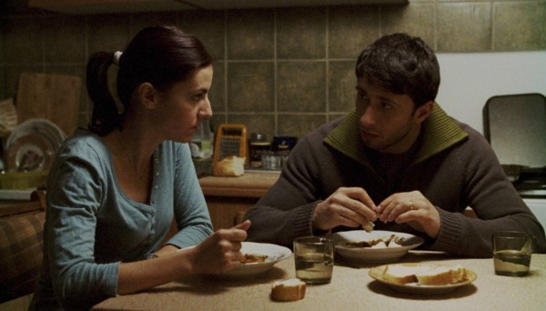

-
The Film of Tomorrow will be an Act of War
by Jonathon Kyle Sturgeon October 17, 2011
ATTENTION: Idiom will be hosting a screening of Once Upon a Time… Rome, Open City, a documentary about the making of Rome, Open City, at UnionDocs on November 5th. Jonathon Kyle Sturgeon will be present for a discussion after the screening.
A supply of images would become the equivalent of an ammunition supply.
– Paul Virilio, War and CinemaWar was Roberto Rossellini’s university. Each of his first six completed features, from The White Ship (1941) to Germany Year Zero (1947), details the conditions of total war and its fallout. And if among directors Rossellini possesses an almost unparalleled acuity for the aesthetics of war — rivaled perhaps only by Jean Renoir, a mutual admirer — it is because he cut his teeth under fascism, a political regime under which aesthetics and militarism achieved maximal complicity. No film in Rossellini’s oeuvre displays his mastery at capturing wartime perception more than his fourth film and first masterpiece, Rome, Open City.
Open City (1945) unfolds as a documentario romanzato, a “fictional-documentary” about an episode of surveillance and torture that played out during the Nazi occupation of Rome in 1944. The film baffled early audiences with its newsreel authenticity, frenetic pace, and disorienting sense of hyper-reality. Even the all-knowing James Agee had to see it twice; the second time he declared Open City to be shot-through with “the exalted spirit of actual experience.” Yet behind this first wave of reaction lies a disturbing message. Rossellini offered Romans a re-enactment that many took for documentary: this fact alone suggests that years of surveillance had already come to blur everyday distinctions between life and cinema.
The villain of Open City, Major Bergmann, deals openly in two things: death and images. An image for Bergmann — chief of the Gestapo — is a way to locate and track people, and if Bergmann can find you, he can kill you. Even as Open City begins, the Germans have seized Rome’s networks of communication and vision. Bergmann sees the Eternal City as mere cartography. This is why Rossellini introduces him with an overlay of a map of the city, which he analyzes according to the Schröder Plan, a logistics of divide and conquer. The division of Rome into fourteen sections “will permit dragnet operations on a grand scale with minimum force,” Bergmann boasts while shuffling a deck of photographs. The images he fingers are of resistance fighters in various disguises. “I’m fond of pictures that catch people unaware,” he muses, collecting in one line of dialogue an entire dream of cinema, one that runs from Dziga Vertov through Kracauer’s Theory of Film and into the YouTube prank vid. When the chief of police asks the Major how he knows so much, Bergmann responds, “Every evening I take a long stroll through Rome without leaving this office.”
And so Open City, a veritable ballet of reconnaissance, dances to the music of life under occupation. A once lively street is now noiseless and vacant, now pierced by the alien cadence of a German unit pounding the pavement in lockstep. Everywhere the plainsong of surveillance is met by the barely perceptible rhythms of resistance, of narrow rooftop escapes and back-room exchanges. The hiss of an anti-fascist radio broadcast from London is snuffed out by a closing shutter. A priest launders one million lire for the resistance in the pages of a manuscript. Roman children prepare explosives somewhere out of frame. Everything in Open City is hidden, and yet, somehow, everything is within sight, like the view from a helicopter.
Could it be that modern cinema was born in Major Bergmann’s map room? In a scene shot inside an empty building somewhere along Rome’s Via degli Avignonesi? André Bazin, the critic who situated Open City at the birth of Italian neorealism — and neorealism itself at the threshold of modern cinema — claimed for the film (and its brother, Paisän) the birthright of the image-fait (or fact-image). Rossellini flattens the image, Bazin explains, to the point where everything matters, where no single material or human element outweighs another. Everything visible carries equal density, not unlike the features of a map. That same decade Jean-Luc Godard would locate a sea change in modern cinema precisely at this juncture between occupation and resistance. To do so he would invoke the metaphor of a map: “All roads,” Godard said, “lead to Rome, Open City.”
Yes, but all roads lead away from Open City as well. Many of the same critics and directors who elevated Rossellini’s film to the status of neorealist masterwork were quick to abandon it for higher ground. The problem was simple: years later, Open City didn’t feel real enough. For some, like Gilles Deleuze, the accolades of neorealism were better bestowed on Rossellini’s more “lacunary” follow-ups, like Paisän and Stromboli. Even Godard, in an interview with Youssef Ishaghpour fifty years after his original pronouncement, decamps from Open City. Where he once cited the film as the standard of proof that “art can be consonant with chance” in the face of fascism, Godard now reverses course: “Here too cinema had a second chance but didn’t take it. This is why I quote the example of Rome, Open City. Although it isn’t quite there, although it’s a bit fake.” Godard reprises an oft-heard argument about the film, one that suggests that behind Open City‘s newsreel facade lies not chance but deliberate melodrama, more soap opera than cinema.
And Godard is correct on this point: lots of melodramatic shit happens in Open City. Beautiful women take opium. A mother-to-be is slain on her wedding day. Strong, silent men are reduced to screaming death. Prostitution is implied. A priest beats an oldster over the head with a frying pan. Every principal character, in fact, dies at the hands of the Nazis, in what amounts to not one but three tragedian poses. All of this is a far cry, the argument goes, from neorealism.
Yet, with Open City, Rossellini uses cheating, lying, stealing, and dying — the elements of melodrama — to reveal a new reality defined by surveillance and reconnaissance, occupation and militarism. Somewhere along the way, though, neorealism came to be thought of merely as a naturalistic approach to the quotidian realities of the downtrodden. This led critical perception to favor what Bazin famously called “Zavattini’s Dream,” over and above “populist melodramas” like Open City and its “surprise effects.” Bazin described Zavattini’s Dream as the desire, “to make a whole film out of ninety minutes in the life of a man to whom nothing happens.” The effect of this dream, Bazin declares triumphantly in a review of Umberto D, is to
make cinema the asymptote of reality – but in order that it should ultimately be life itself that becomes spectacle, in order that life might in this perfect mirror be visible poetry, be the self into which film finally changes it.
Rossellini was skeptical of this cinema as a “perfect mirror,” for he knew that cinema, during occupation, had already merged with life, that life had merged with war, and that the reality of war had never really ended at all. He also knew that the Nazis had another name for “watching a man do nothing for ninety minutes”: surveillance. If the goal of realism, for Bazin or anyone else, is Zavattini’s dream, then Rossellini’s Major Bergmann had achieved it long before neorealism became a catchword. The anti-fascist partisans who were consistently photographed without knowing it were Umberto D before Umberto D. Life during occupation, Rossellini proved in the crucial moment, was already life-cum-cinema, because life itself had become spectacle.
Open City can now be understood as one of cinema’s most prescient documentaries about the transformation of one city — Rome, the Eternal City — into the form of cinema itself. (It was made with a hard-to-obtain documentary license granted by the Allied forces.) The occupation of Rome, motored by the divisiveness of Bergmann’s Schröder Plan, turned workaday Romans against each other. Forced into different sectors of their home city, the citizens of Rome were left without a polis, without the basic site required for congregation and civility. Open City shows them pursued and pursuing the city through technology, at a distance from each other. This is why telephones play such a crucial role in the plot of the film. A black telephone, in fact, thwarts the resistance. Rome, during war and occupation, was transformed from a city of actors, a theatre-city, into a city of actor-spectators, of citizens forced to react to the inconstancy of events, the omnipresence of police surveillance, and an enveloping pall of half-truths and disinformation.
It’s possible to trace a family resemblance from the old city symphony films, like Cavalcanti’s Rien que les heures (1930) and the recently rereleased People on Sunday (1930), right through Open City and into the present. Prior to Open City, the prewar city symphonies were increasingly in thrall to the logistics of speed. Movement in these films is determined almost exclusively by the brakes and accelerations of a city life governed by trains, taxis, and paddle-boats. The portable camera-eye was still a relative novelty. By the emergence of Open City, a new reality had struck, a wartime world where the speed of the motor is merged with the ever-watchful lens of a colonizing force.
Much of the best of contemporary cinema extends this logic. Yet life in the world of modern cinema is not structured so much around foreign occupation as it is the result of what Paul Virilio calls endo-colonization, or the conditions that prevail when a modern nation-state reverse-invades its own population, mostly by undervaluing and under-resourcing its inhabitants. It’s as if the resistance fighters of the global city are strong-armed into a permanent resistance, one marked by ongoing rootlessness and the eventual destruction of all possible abodes, including slums. The dismantling of neighborhoods — à la the Schröder Plan — has accordingly become one of the great features of contemporary film. In Pedro Costa’s landmark Letters from Fontainhas — Ossos (1997), In Vanda’s Room (2000), and Colossal Youth (2005) — the nearly invisible inhabitants of a Portuguese slum dangle in doorways and thresholds that sharply recall Open City‘s Prenestino district. In Jose Luis Guerin’s En Construccion (2000), a neighborhood is cleared away by construction workers who find, to their amusement, that they are “modernizing” a district built on top of a Roman cemetery. (It’s worth noting that this sequence appears to be a direct reference to Rossellini’s Voyage to Italy.) The same raison d’être drives much of the work of Jia Zhangke, Patrick Keiller, and countless others.
The contemporary film closest to Open City, the offspring that bears the greatest family resemblance, is Corneliu Porumboiu’s Police, Adjective. Porumboiu’s film shrewdly links the tropes of Slow Cinema — curious longueurs, spectral distances — with a state that spies on its own population. If arthouse cinema in the preceding two decades confirmed the revenge of Zavattini’s Dream, Police, Adjective — picking up where Open City left off — excoriates this tendency. Its long, slow passages of meaningless surveillance are meant to mock a world where states occupy their own populations, and where a complacent cinema falls neatly in line with the order of things. Police, Adjective concludes with a lengthy scene of dialogue in the office of a local police chief, one that immediately conjures up the image of Major Bergmann in his map room. It is in this scene where contemporary cinema most vividly unites the suppressive activity of the police with the destruction of the polis.
The networks of resistance so powerfully articulated in Open City are not lost but intensified in contemporary cinema. On one extreme is Jerzy Skolimowski’s Essential Killing (2010), where a solitary insurgent is chased in a nameless country by an omnipotent American military. On the other extreme is Harmony Korine’s Trash Humpers (2010), where a group of masked vagrants roams through parking lots and back alleys in search of temporary communion with waste and detritus. Sadly, both of these films point to a new reality — a neorealism — one where the city, once open, is now an abandoned territory.